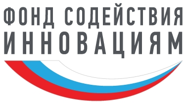
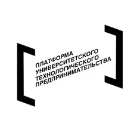

Инновационный роботизированный комплекс для аграрного сектора и логистики
Узнать большеРоботизированный робот-укладчик предназначен для автоматической укладки упакованной сельскохозяйственной продукции на поддоны.
Устройство способно работать в связке с существующими линиями упаковки и транспортировки, обеспечивая высокую скорость и точность укладки.